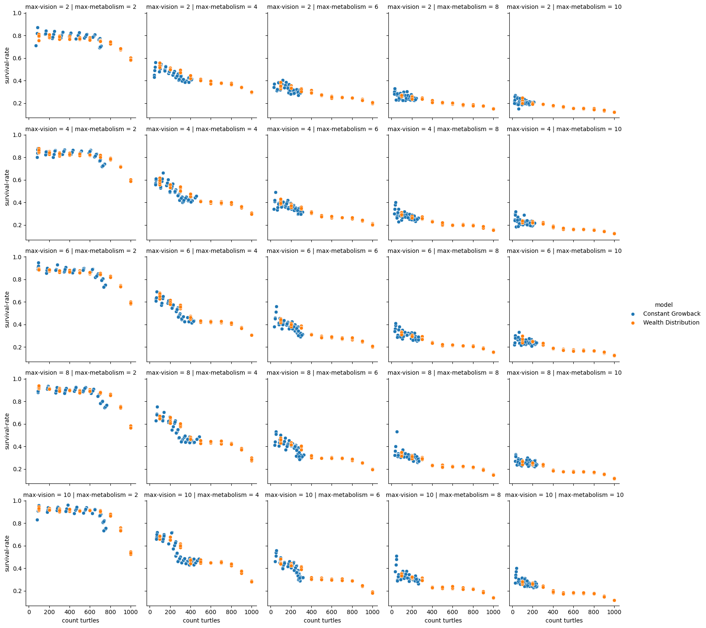
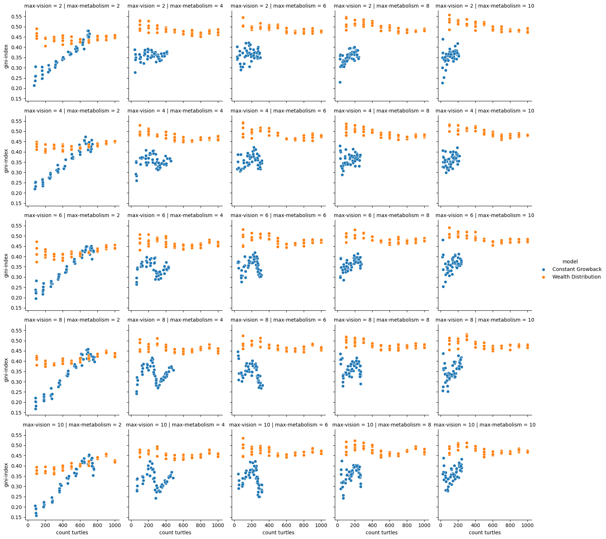
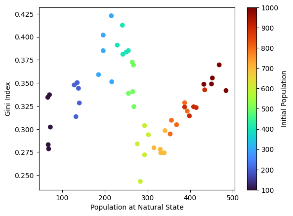
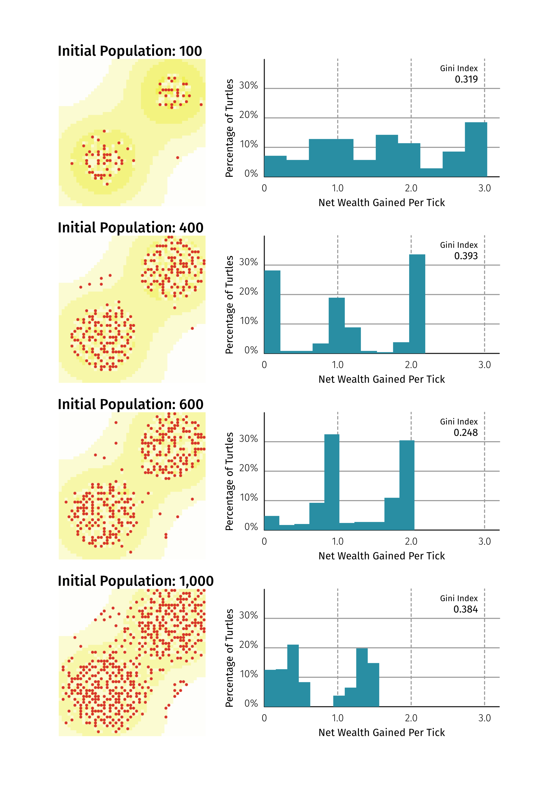
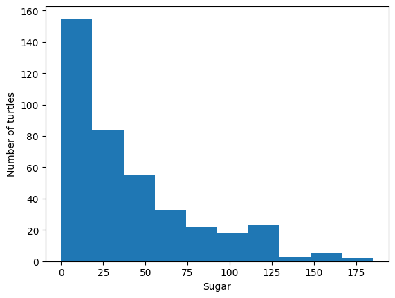
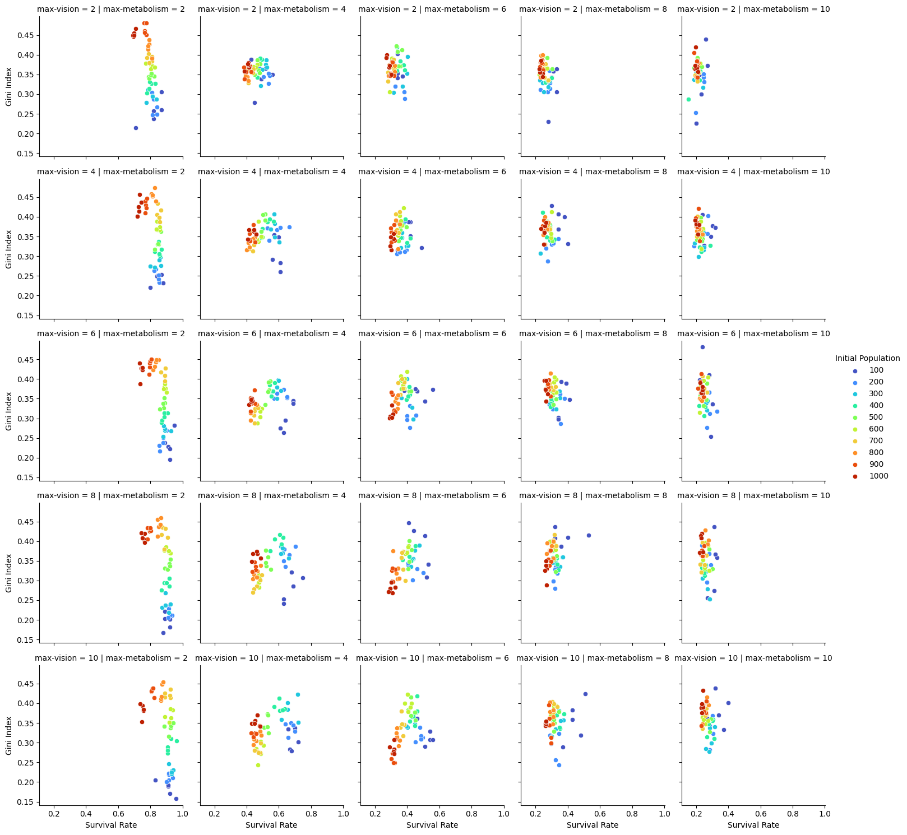

Agent-Based Modelling Assessment 1
Aim
This report aims to investigate the impact of various factors to the wealth distribution and the survival rate of turtles in the sugarscape model.
In this report, the following 2 models from the NetLogo Models Library are investigated and compared.
- Sugarscape 2 Constant Growback model (Li and Wilensky, 2009a)
- Sugarscape 3 Wealth Distribution (Li and Wilensky, 2009b)
The differences between the 2 models is that “Sugarscape 3” introduces the idea of ageing where turtles who have reached a certain age will die, and that dead turtles will be replaced by a new turtle placed in a random position on the field. The “Sugarscape 2” model can be interpreted as a representation of one generation of turtles, where “Sugarscape 3” models multiple generations.
Research question upon comparison of the 2 models is: is there a difference in the survival rate and the Gini index when considering the reproduction?
My hypothesis is that the wealth distribution among turtles will even out when considering reproduction. The inequality is due to the behaviour of turtles being ‘stuck’ to different areas with different amount of sugar, thus leading to the fixture of inequality where the ‘rich get richer’ thanks to the access to more productive patches. The reproduction has the function to redistribute the turtles after a certain amount of time, so more fluidness is expected to be introduced to the system.
Methods
We have modified the Sugarscape Models in the NetLogo Models Library (Li and Wilensky, 2009a, 2009b) enabling us to modify constants on the interface and have reporters present the performance of each model. We have modified the following parameters to observe the relationship between each varible and the performance of each model.
Changing variables
Using the BehaviorSpace function of NetLogo, we have simulated the performance for the following combinations of variables for both Sugarscape 2 and 3 models.. All variations of the model were repeated 20 times to acquire a distribution of the results.
| Variable | Explanation | Range |
|---|---|---|
initial_population |
Initial population of turtles. | 200, 400, 600, 800, 1000 |
max-metabolism |
Maximum metabolism of turtles. Metabolism for each turtle is assigned randomly between 1 and this variable. | 2, 4, 6, 8, 10 |
max-vision |
Maximum vision of turtles. Vision for each turtle is assigned randomly between 1 and this variable. | 2, 4, 6, 8, 10 |
max-max-age |
The maximum number for the maximum age (the age of death) of turtles. Maximum age for each turtles is assigned randomly between 60% and 100% of this variable. |
Reporters of performance
For each model we have created, we have chosen the following indeces to measure the performance of each model.
- the survival rate of turtles, which will be defined as:
- the percentage of turtles alive at the natural state to the initial population (Sugarscape 2)
- the percentage of turtles who died because of age (not by starvation) to the total deaths (Sugarscape 3)
- the Gini Index (ratio of area under the Lorenz curve compared to perfect equality: cumulative proportion of population compared to the cumulative proportion of wealth (OECD, 2015))
The following were observed to supplement the above parameters to identify the state of the models.
- the number of turtles at the natural state
- the mean vision of alive turtles
- the mean metabolism of alive turtles
Time of Observations
We observed these parameters at the natural state. We have defined this as follows:
- 100 ticks after the last death (Sugarscape 2)
- observation window of 2 to 5 maximum lifespan lengths after start (Sugarscape 3)
Comparison between models
When comparing models, all parameters must be aligned to observe the difference in behaviour. The population is compared using the natural state after the inital drop in population occured for the Sugarscape 2 model, in order to compare between natural states of each model.
Results
Survival Rate
The 2 models were compared on the basis of alive turtles at the natural state. Sugarscape 2 model will have less turtles than the initial state, while Sugarscape 3 model will have the same number of turtles as the start.
The observed survival rate for each of the models are shown as follows.

Gini Index
The Gini Index for each simulation is plotted as follows:

The Sugarscape 3 model has a higher Gini Index overall, and is less affected by the population of turtles. On the other hand, Sugarscape 2 model has a lower Gini Index, but is highly affected by the population, with an interesting N-shaped pattern that can be observed. This pattern was most dinstinctive in conditions with high vision and moderate metabolism range, as shown in the figure below.

max-vision == 10 and max-metabolism = 4.Discussion
Gini Index
Relationship with Population
The results have shown an N-shaped pattern for the relationship between the population and the Gini Index at the natural state. The inequality will increase corresponding to population, but at a certain point will start to decrease, and finally increases again. To identify the reason behind this phenomenon, we analysed the wealth distribution for each model. A snapshot of the natural state and the wealth distribution for a model with different initial population is shown below. The net wealth gained per tick is the amount of sugar for each turtle divided by the ticks passed. This shows the net sugar gain each turtle has achieved per tick, or the difference between the collected sugar and metabolism.

max-vision == 10 and max-metabolism = 4). The range was divided into 10 bins to create histogram, and was plotted according to the net wealth gained per tick.We can observe the wealth distribution is separated into distinct groups for all 4 simulations. This may be due to the metabolism having integer values, and the available sugar is steady once the model reaches its natural state.
The model with initial population of 100 has most of the turtles clustered in the high growth areas indicated by darker yellow, allowing for more sugar for the majority of the turtles. The separation of groups is less obvious compared to the other models.
The second model has 3 distinct groups, clustered around 0, 1 and 2. This can be explained as follows:
- The turtles have a steady income of 3, 2 or 1 depending on the area.
- Turtles no longer have access to a steady income of 4, observed in the first model.
The third model shows a similar pattern with the second model, with a slightly lower maximum net wealth gained per tick value and a significantly smaller population of the group clustered around 0. This implies each turtle has a slightly smaller income compared to the previous model, and the slight decrease had a fatal impact on the ‘poorest’ group, leading to a decrease in number. The improvement in the Gini Index was a result of this starvation, not a result of equal distribution of sugar.
The final model sees a shift of the groups to the left, and the groups spreading out. The competition has made it difficult to gain a steady (integer) amount of income throughout the simulation, and lead to a decline in the average income earned every tick. The Gini Index has increased because of the relationship between the two groups; the same absolute difference now has a different ratio, making the poorer group having less overall share of the total wealth.
Considering Reproduction
An interesting pattern was observed for inequality, where by introducing the reproduction scheme the Gini Index increased, indicating higher inequality. This was a counterintuitive result, as the ‘resetting’ of wealth by each generation seems to lead to even out the distribution of wealth.

max-vision = 6, max-metabolism = 4, max-max-age = 100In the simulation, the wealth distribution for the Sugarscape 3 model shows a negatively skewed distribution as shown above. As a result of constantly replacing dead turtles with newborn ones, turtles that are spawn in areas where it is impossible to survive in the Sugarscape 3 model are constantly supplied, leading to a steady amount of the poor population which will starve to death in the near future.
Survival Rate
Some patterns can be observed for the survival rate. The survival rate for the 2 models share a similar pattern when the final population is similar. This result ensures our definition of survival rates are decent. The trend is showing a steep drop at low population, followed by a relatively flat segment where the survival rate stays unchanged in accordance to population change.
This can also be explained through the wealth distribution we have observed in the above section. The initial drop is explained by the difference between the second and third model, where the ‘poorest’ group can no longer survive, leading to a drop in the survival rate. The relatively flat area that follows is illustrated between the third and the fourth model, where the average income decreases but no significant population groups starve.
This can be supported by the relationship between the survival rate and the Gini Index shown below.

The ‘N-shape’ of this graph consists of two patterns observed:
- survival rate does not change significantly while the Gini Index increases
- the survival rate and the Gini Index both drop
The former can appear as a result of the ‘left shift’ of the wealth distribution histogram, while the latter may be caused by the poorest group forced into starvation.
Conclusion
We have observed the impact of population and ability of turtles on the wealth distribution and the survival rate of the model. The survival rate and the Gini Index are both essential parameters when measuring the equality of wealth distribution. Our models have revealed that an improvement in the Gini Index (which only considers the surviving population) may be a result of the group with the least wealth starving to death, which is clearly not an ideal state. Further analysis is required to potentially identify a method that is capable of handling both survival rate and the inequality of the surviving. Reproduction rules also have great impact on the final output. We have considered a replacement in random locations, but there is room for extended research considering the influence of the parent generation to the characteristics of the newborn. This will enable us to consider the effect of real-life phenomena such as education levels and inheritance of wealth.